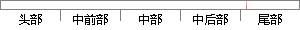

当内存分区创建好后，就可以在任务里申请和释放内存空间了。
片段位置图

相似结果
相似片段：()要建立一个内存分区,必须具备三个条件: 1. 有供建立内存分区的内存空间:...◇ 内存块释放函数OSMemPut()用户创建的任务不在使用申请来的内存块的时候,必须...
| 标题 | 《uCOS II中的内存管理模块 - 豆丁网》 |
| 对比库 | PaperRater云论文库 |
| 网址 | http://www.docin.com/p-68117599.html |
| 相似率 | 63.16% （轻度抄袭） |
※ 片段修改建议 ※
近似词参考：- 就可以：就能够 就能
- 任务：使命 义务
- 释放：开释
系统自动生成语句： 当内存分区创建好后，就能够在使命里申请和开释内存空间了。
注：本片段修改建议为系统自动生成，仅供参考。